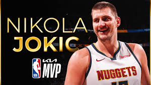

Nikola Jokic Raih MVP Ketiga dalama empat musim
Kamis, 09 Mei 2024 10:21 WIB
Bintang Denver Nuggets Nikola Jokic dinobatkan sebagai MVP NBA untuk ketiga kalinya dalam empat musim pada hari Rabu (8/5) waktu Amerika Serikat, yang semakin mengukuhkan statusnya di antara pemain bola basket terhebat sepanjang masa. Jokic menjadi pemain kesembilan dalam sejarah liga dan pemain internasional pertama yang memenangkan penghargaan tersebut setidaknya tiga kali.
NBA mengumumkan Jokic sebagai pemenang atas garda Oklahoma City Thunder Shai Gilgeous-Alexander dan garda Dallas Mavericks Luka Doncic, yang keduanya merupakan finalis. Jokic memperoleh 79 dari 99 suara peringkat pertama, mengungguli finalis Gilgeous-Alexander (15 suara) dan Doncic (4 suara). Forwarda Milwaukee Bucks Giannis Antetokounmpo, yang menerima satu suara tempat pertama, dan garda New York Knicks Jalen Brunson masing-masing menempati posisi keempat dan kelima.
“Anda harus memulai dengan rekan satu tim Anda,” kata Jokic dalam sebuah wawancara dengan TNT. “Tanpa mereka, saya tidak bisa berbuat apa-apa. Pelatih, pemain, organisasi, staf medis, pelatih kekuatan, pelatih pengembangan, semuanya merupakan satu lingkaran besar. Saya tidak bisa menjadi apa pun tanpa mereka.”
Komentator TNT Shaquille O'Neal kemudian mengatakan kepada Jokic bahwa dia yakin Gilgeous-Alexander pantas memenangkan penghargaan tahun ini.
“Terima kasih, Shaq,” kata Jokic. “Kami tidak menghakimi orang di sini. Tidak apa-apa. Itu adalah pendapat Anda. Saya bercanda. Sebenarnya, ada banyak pemain yang pantas mendapatkannya.”
Jokic, mencetak rata-rata 26,4 poin, 12,4 rebound, dan 9,0 asis dalam 79 pertandingan, memimpin Nuggets meraih 57 kemenangan dan unggulan kedua Wilayah Barat. Satu-satunya pemain dalam sejarah liga yang menyamai rata-rata tersebut adalah guard Hall of Fame Oscar Robertson pada tahun 1962.
Jokic menjadi pemain ke-9 dalam sejarah liga yang memenangkan tiga atau lebih penghargaan MVP. Bergabung dengan pemain elit NBA seperti Kareem Abdul-Jabbar (enam), Bill Russell (lima), Michael Jordan (lima), Wilt Chamberlain (empat), LeBron James (empat), Moses Malone (tiga), Larry Bird (tiga) dan Magic Johnson (tiga) adalah satu-satunya pemain lain yang memenangkan penghargaan setidaknya tiga kali. NBA menamai penghargaan MVP-nya untuk menghormati Jordan pada tahun 2022.
Jokic memimpin Nuggets dalam poin, rebound, dan asis dan finis di 10 besar NBA di setiap kategori musim ini. Jokic juga memimpin liga dalam peringkat efisiensi pemain, sebuah ukuran yang memperkirakan produktivitas per menit pemain dengan mengukur semua pencapaian statistiknya, positif dan negatif. Jokic telah memimpin liga di PER selama empat musim berturut-turut dan kini menjadi pemimpin NBA sepanjang masa dalam kategori tersebut. Michael Jordan dan LeBron James berada di urutan kedua dan ketiga dalam daftar sepanjang masa. (*)